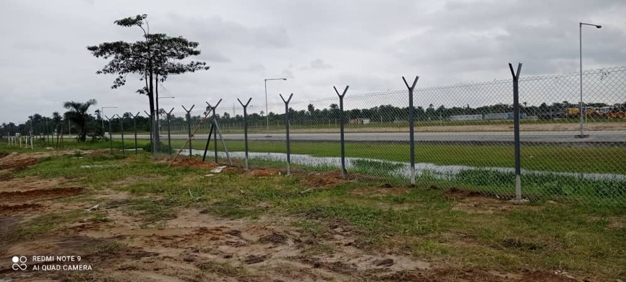

Project Overview
The Temporary Camp Facility (TCF) Site Preparation Works form a critical enabling phase of the NLNG Train 7 expansion project on Bonny Island, Nigeria. The Train 7 development will increase LNG production from 22 to 30 million MT/year, supporting expansion of NLNG’s operational footprint and workforce capacity.
EVOMEC Global Services was engaged as a nominated subcontractor to execute site preparation across Parcels 1, 2, 3, and 4B/5. The objective was to deliver stable, graded, and construction-ready platforms to allow subsequent civil and building works to commence safely and efficiently.
Scope of Work
- Surveying and establishment of work boundary control points.
- Site clearing, topsoil removal, and proper disposal/stockpiling of unsuitable material.
- Sand filling, grading, and compaction to achieve required platform levels.
- Placement of structural fill as final surface preparation layer.
- Construction of road-side trapezoidal drainage sections and access route shaping.
My Role & Key Contributions
- Monitored daily progress and prepared structured daily and weekly reporting.
- Prepared construction documentation including Method Statements and support documents for work approvals.
- Developed valuation support records for interim progress claims.
- Participated in coordination meetings with the main contractor and client representatives.
- Provided supervisory oversight on selected site activities to ensure safe and compliant execution.
Outcome
The TCF areas were successfully prepared to required elevations and compaction standards, enabling follow-on construction works to proceed without delay. The works ensured stable ground conditions, access, and operational readiness for subsequent facility development under the NLNG Train 7 program.
Gallery